×
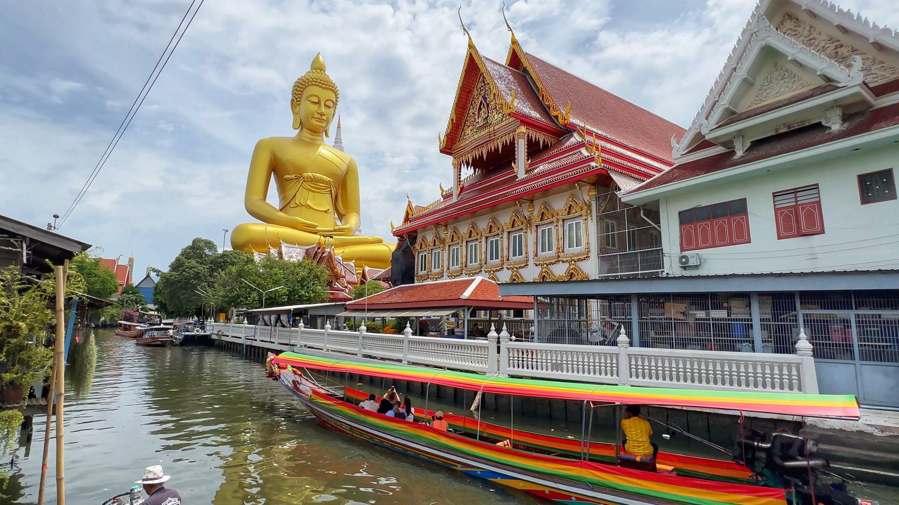
Bangkok Gezi Rehberi
Tarih, kültür ve modern yaşamın iç içe geçtiği Bangkok, bitmeyen enerjisi, görkemli tapınakları, sokak lezzetleri ve renkli şehir hayatıyla Tayland’ın en dinamik yüzünü keşfetmenizi sağlar.
Grand Palace (Büyük Saray)

Grand Palace, 1780’lerden itibaren Siam Kralları’nın resmi ikametgahı olarak uzun
yıllar kullanılmış, görkemli
mimarisiyle göz alıcı bir saray kompleksidir.
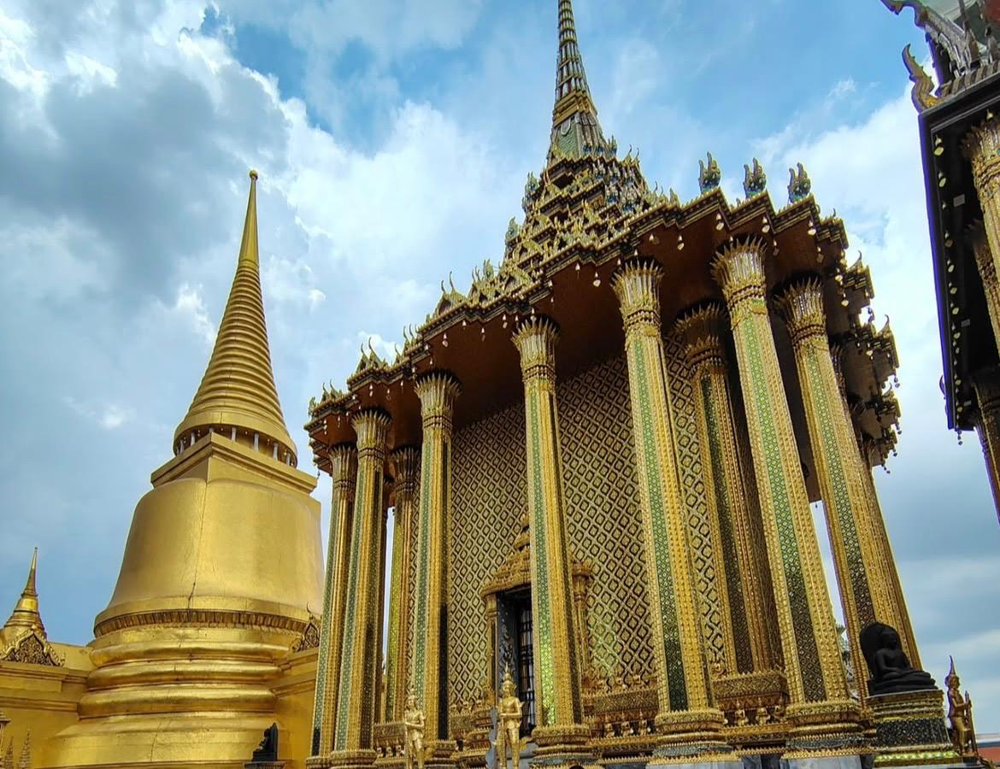
Saray, altınla kaplı göz alıcı pagodalar ve karmaşık heykeller ile geleneksel desenlerle
süslü yapılarıyla sizi resmen büyülüyor.
Üç ana bölümden oluşan yapı; ülkenin en kutsal heykelinin bulunduğu Wat Phra Kaew, gösterişli saray binaları ve özenle düzenlenmiş bahçeler ile avlulardan meydana gelir.
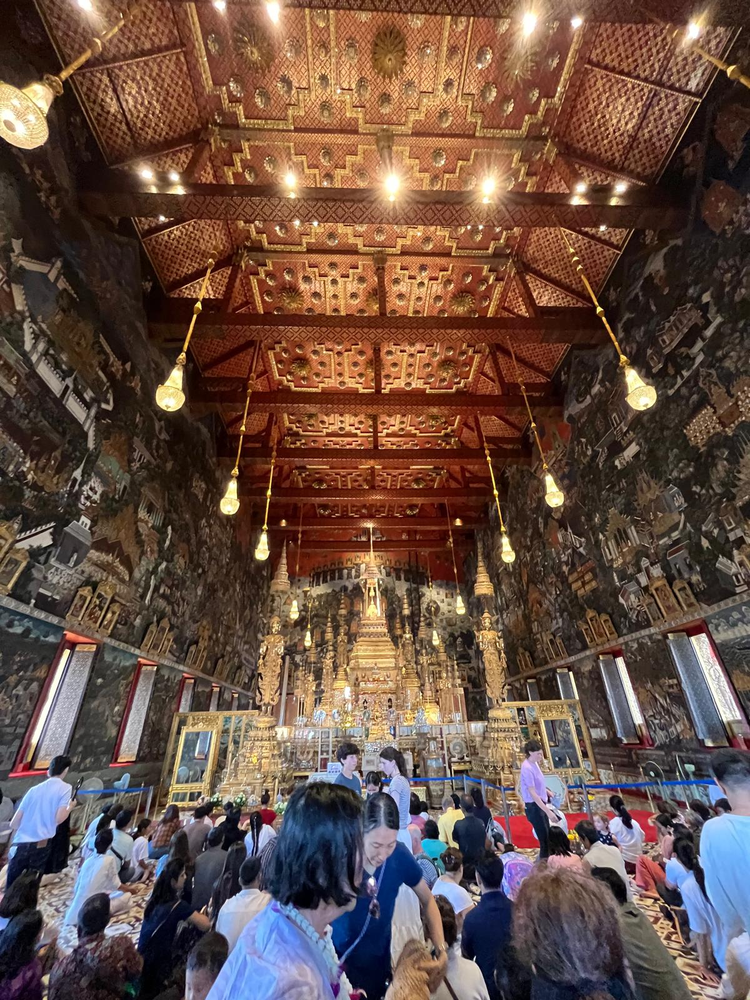Burası, Wat Phra Kaew tapınağının içinde yer alan ve Tayland’ın en kutsal
sembollerinden biri kabul
edilen Emerald Buddha’nın bulunduğu kutsal alan. İçeri girer girmez hissettiğiniz
o büyülü atmosferi
yansıtan bu fotoğrafı giriş kapısında gizlice çekmiştim.
Zümrüt Buda olarak bilinen
bu heykel
aslında zümrütten değil, yeşil yeşim taşından yapılmış ve sadece 66 cm yüksekliğinde. Kökeni
efsanelerle dolu olan heykelin kıyafetleri, kral tarafından yılda üç kez mevsimlere göre
değiştirilen özel bir ritüelle yenileniyormuş.
Tapınak içinde fotoğraf çekmek yasak olduğu için
içeriyi kendi gözlerinizle görmek gerçekten çok özel bir his. İçeri girdiğinizde bu manzarayı
mutlaka görmelisiniz.
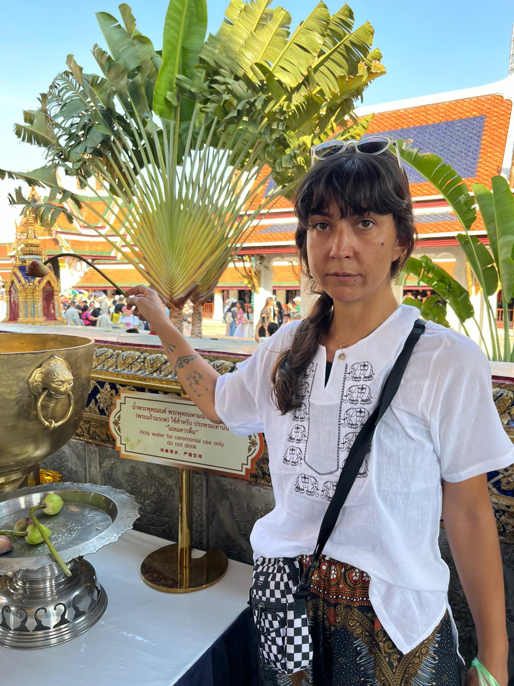
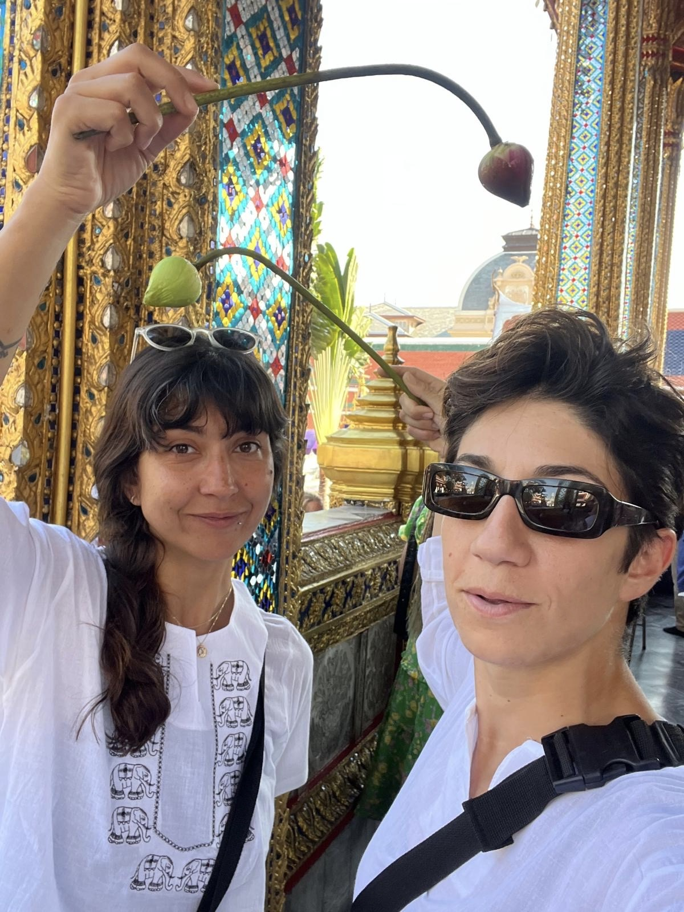
Grand Palace'ın çok katı bir kıyafet kuralı var. Omuzlarınız ve bacaklarınız örtülü olmadan içeri
girmenize izin verilmiyor.
Biz oraya gittiğimizde girişte uyarıldık ve uzun bir şey giymemiz gerektiği söylendi. Eskiden uygun
kıyafetler kiralamanıza izin veriliyormuş, ama artık vermiyorlar; bu yüzden biz de caddenin
karşısındaki dükkanlardan fil desenli gömlek ve şalvar aldık. Çok da pahalı değildi, fiyatı yaklaşık
150 Tayland Bahtı civarındaydı.
Giriş ücreti, kişi başı 500 Baht ve saray her gün 08:30–15:30 saatleri
arasında ziyaretçilere açıktır.
Bizden size bir uyarı ve tavsiye: Grand Palace'ı ziyaret etmeyi planlıyorsanız,
mutlaka uygun şekilde giyindiğinizden emin olun ve
kalabalıktan kaçınmak için sabah erken saatlerde gitmeye çalışın.
Wat Pho
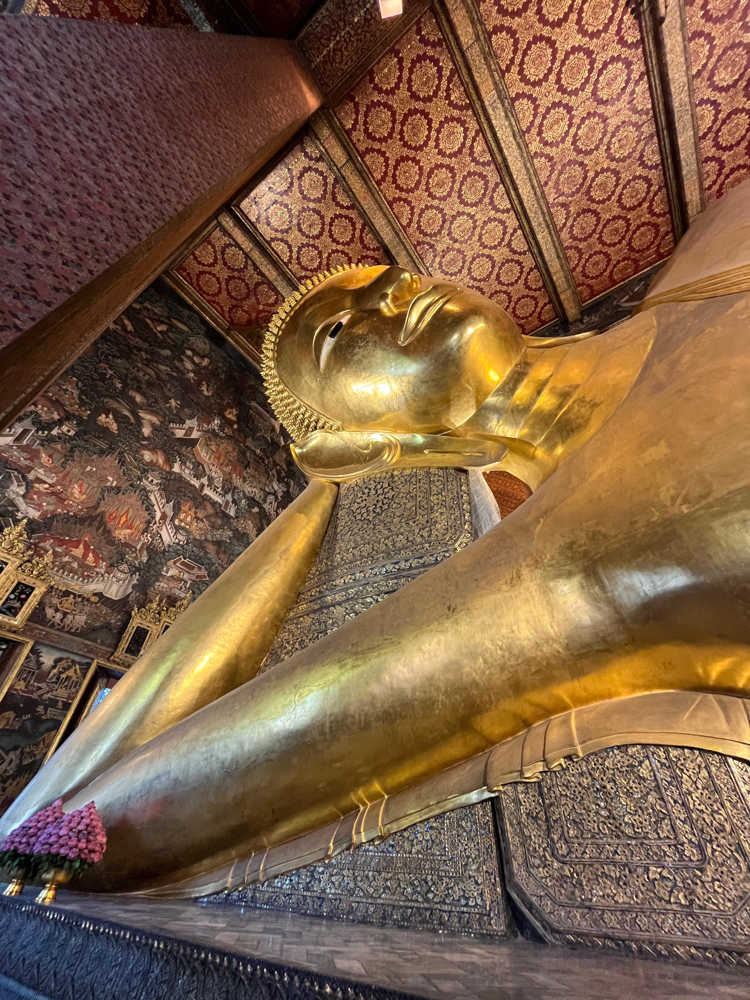
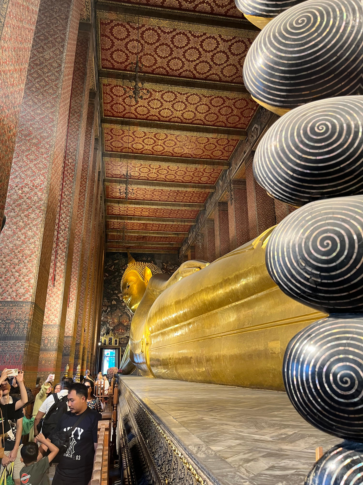
Wat Pho, Bangkok’un ünlü diğer tapınaklarından biri olup, burada ülkenin en büyük Yatan Buda heykelini görme fırsatını bulabilirsiniz. Altın kaplama heykel yaklaşık 46 metre uzunluğunda olup, ayak tabanları geleneksel motiflerle süslenmiştir.
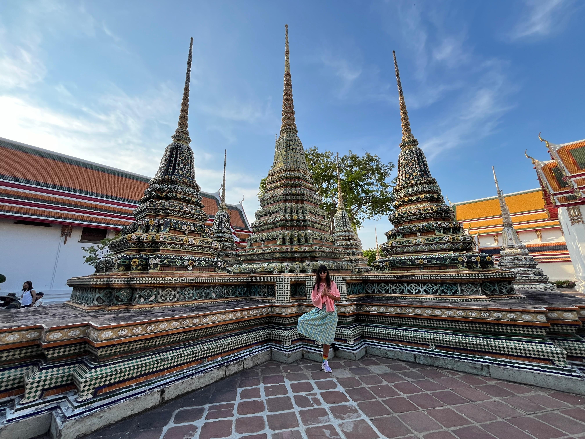
Wat Pho, rengarenk pagodaları ve özenle işlenmiş detaylarıyla göz kamaştıran bir tapınaktır. Tanışıp konuştuğumuz bazı kişilerden öğrendiğimize göre, Bangkok’a sırf bu tapınakların fotoğraflarını çekmek için gelen insanlar bile var.
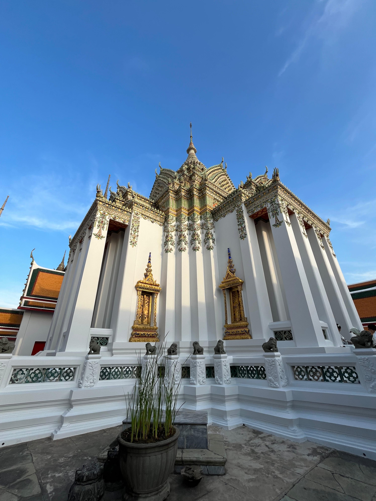
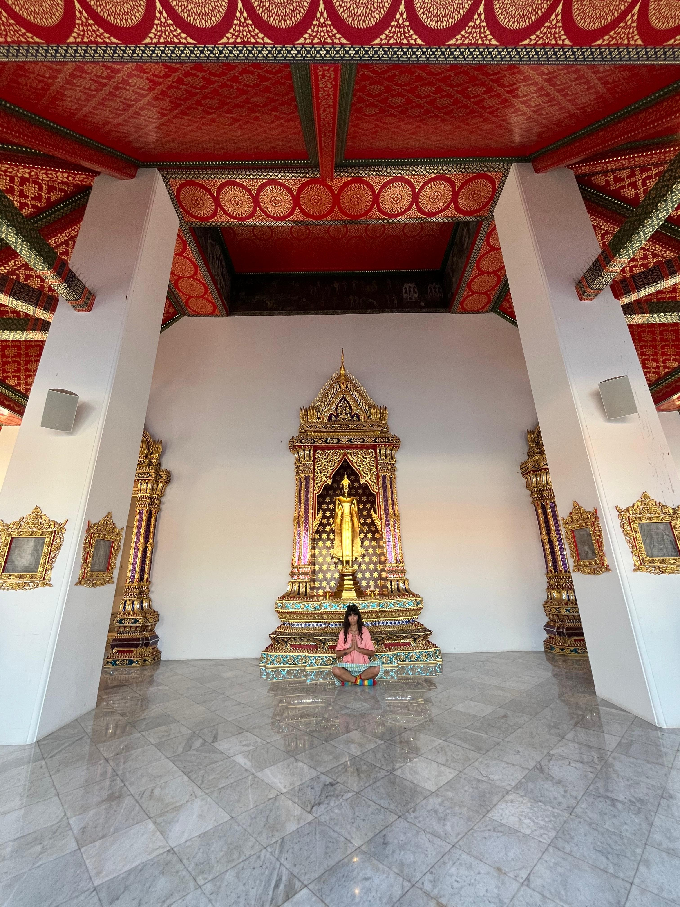
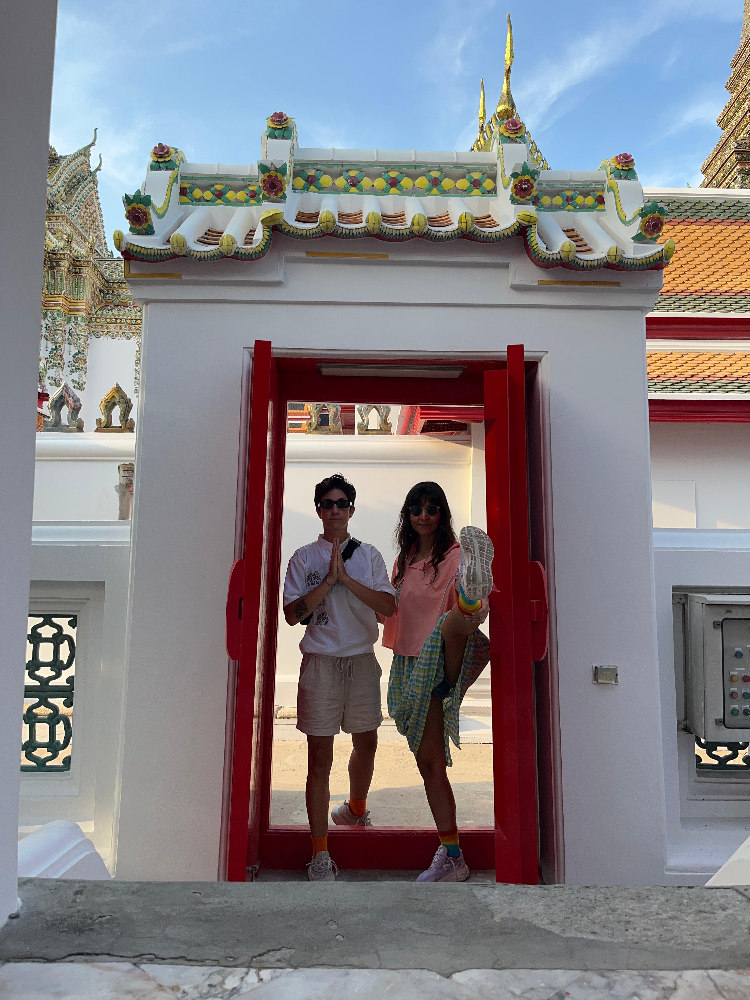
Grand Palace’a kıyasla giriş ücreti daha uygun, kalabalık daha az ve mimarisi fotoğraf çekmek için
mükemmel; bu sayede tapınağın güzelliklerini sakin bir şekilde keşfetmek mümkün oluyor.
Giriş ücreti, kişi başı 200 Baht ve tapınak her gün 08:00–18:30 saatleri
arasında ziyaretçilere açıktır.
Wat Arun
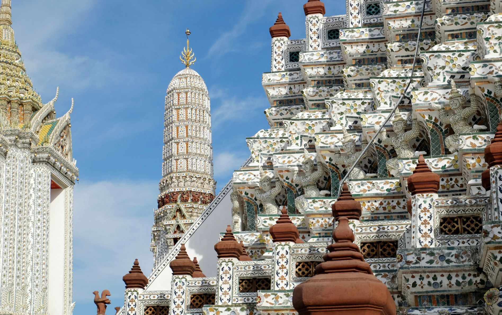Chao Phraya Nehri’nin karşı kıyısında, Wat Pho’nun tam karşısında yer alan Wat Arun, muhteşem beyaz pagodasıyla Bangkok’un en tanınmış simge yapılarından biridir. Tapınağın merkezinde yer alan yaklaşık 70 metrelik dev Khmer tarzı kule (prang), Wat Arun’un en dikkat çekici yapısıdır.
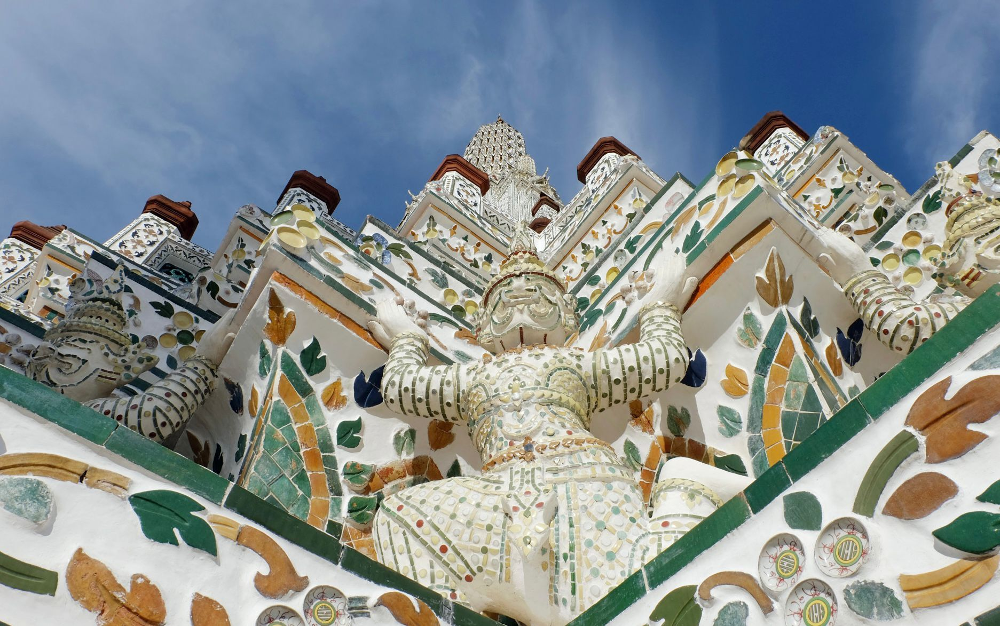Tüm yüzeyi Çin’den gelen kırık porselenler ve deniz kabuklarıyla süslenmiş bu kule, yakından
bakıldığında inanılmaz bir detaya sahip.
Wat Arun’a geçmek için Wat Pho tarafından yaklaşık 4 THB ödeyerek küçük nehir
feribotlarına binebilirsiniz.
Tapınağa ulaştığınızda, yeni yenilenen ana pagodanın üst kısmına çıkarak Bangkok şehrini ve Chao
Phraya Nehri üzerindeki muhteşem gün batımını tepeden izleyebilirsiniz.
Eğer gün batımında tapınağa çıkmak istemezseniz, hemen karşısında yer alan The Deck restoranı güzel bir seçenek; buradan Wat Arun’un ve nehrin manzarasını izleyebilirsiniz. Yemekler biraz pahalı olsa da, özellikle günbatımı saatlerinde sunduğu manzara bu deneyimi fazlasıyla hak ediyor.
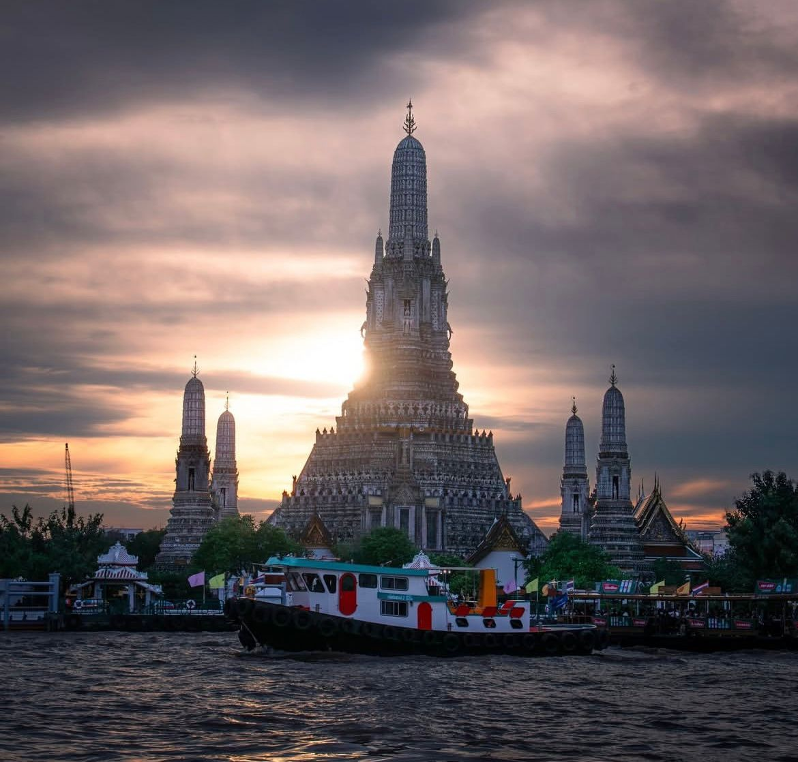
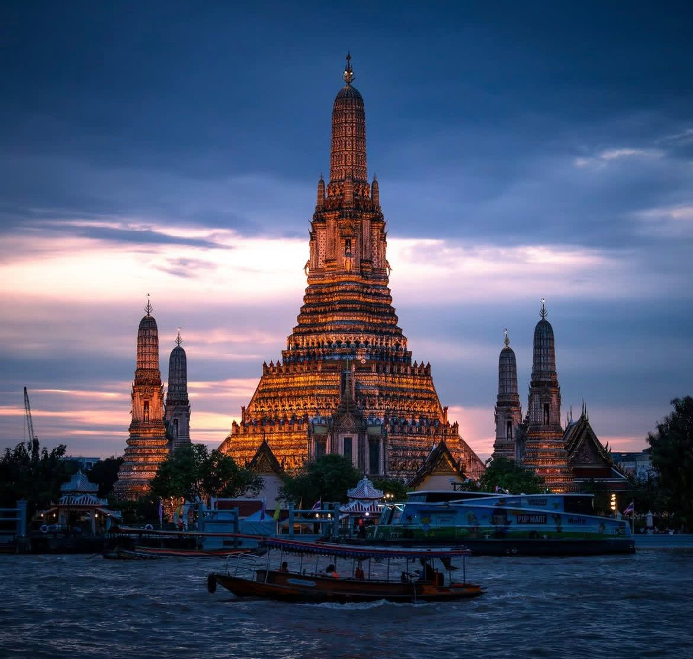
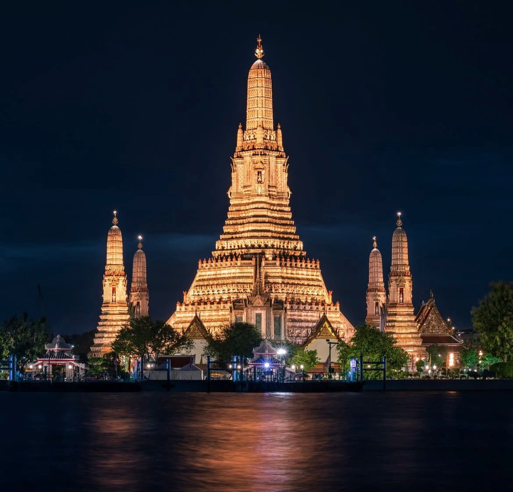
Wat Arun’un farklı saatlerde bambaşka bir atmosfere büründüğünü görünce, biz de gün batımından gece
ışıklarına kadar üç farklı anda fotoğraf çekmeden duramadık. Gerçekten harikaydı.
Wat Arun her gün 07:30–17:30 saatleri arasında ziyarete açık olup, giriş ücreti
yabancılar için
100 THB, Taylandlılar için ise ücretsizdir.
Wat Ratchabophit

Pek fazla kişinin bilmediği ama mutlaka ziyaret etmeniz gereken bir diğer tapınak da Wat
Ratchabophit. Biraz küçük bir tapınak olmasına rağmen mimarisi gerçekten çok
etkileyici; dış cephesi
geleneksel Tay tarzını yansıtırken, iç kısmında Avrupa, özellikle
de İtalyan mimarisinin izlerini
görmek mümkün.
En güzel yanlarından biri ise girişinin ücretsiz olması; çünkü Bangkok’taki birçok
tapınakta giriş
ücretleri oldukça yüksek.
Wat Ratchabophit’in bir diğer harika özelliği ise düzeni. Ortasında 43 metre yüksekliğinde
altın kaplı bir
pagoda yer alır; etrafında ise detaylı süslemelere sahip salonlar ve dairesel yapılar
bulunur.
Avlunun hem içinde hem de dışında rahatça dolaşabilirsiniz.
Turistik kalabalıktan uzak olduğu için Bangkok’un daha yerel ve sessiz yüzünü görmek isteyenler
için güzel bir duraktır.
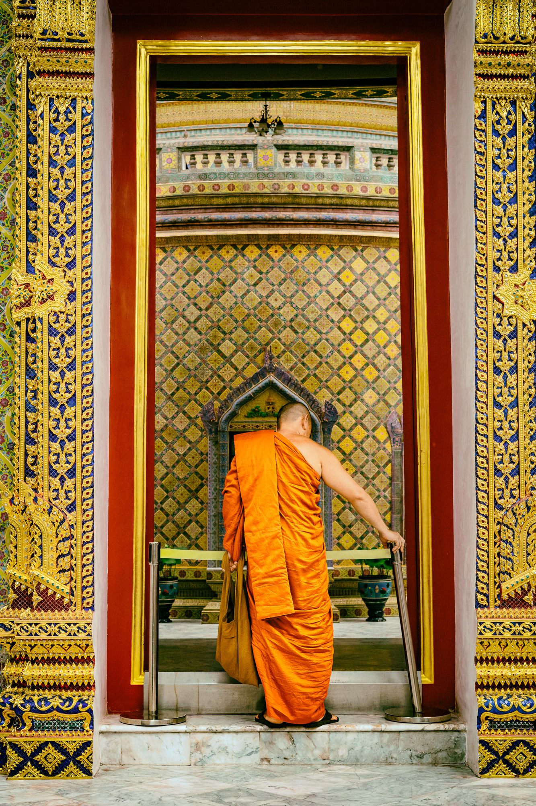
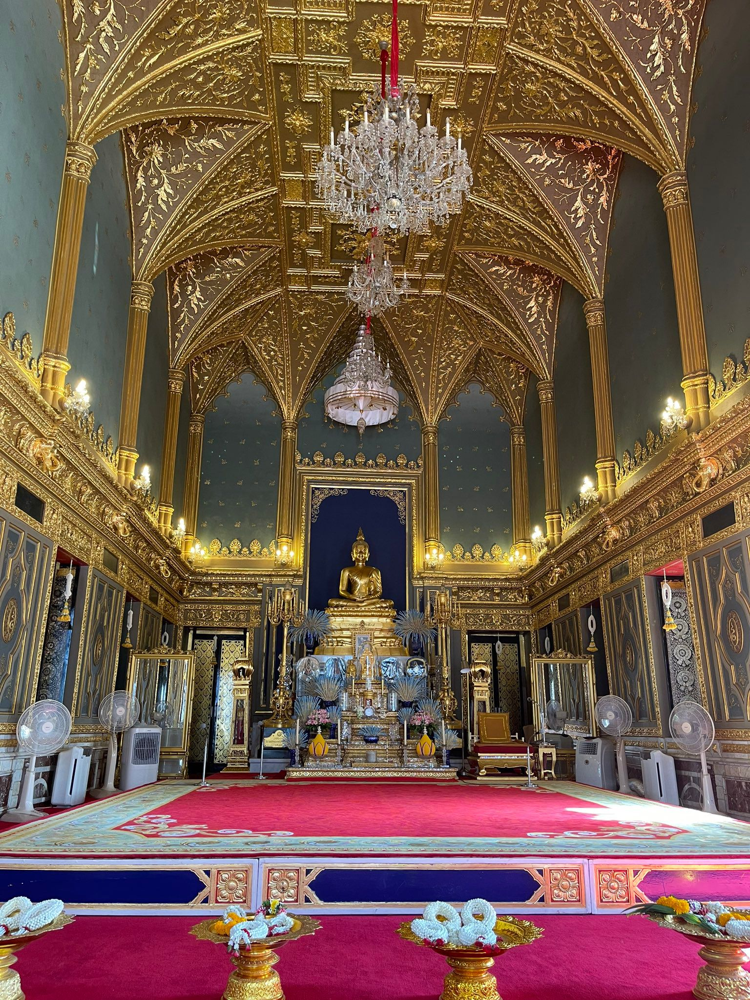
Küçük bir tapınak olduğu için gezmesi kısa sürüyor; ancak buna rağmen sizi kendine hayran bırakacağına eminiz. Tapınak her gün 09:00–17:00 saatleri arasında ziyarete açıktır ve giriş ücreti yoktur.
Wat Paknam Phasi Charoen
Bangkok’ta en sevdiğimiz tapınaklardan biri olan Wat Paknam Phasi Charoen, kilometrelerce uzaktan görülebilen ve şehrin en büyük Buda heykelidir. Nehir boyunca yürüyüş yapıp her açıdan izlemek gerçekten çok etkileyici.
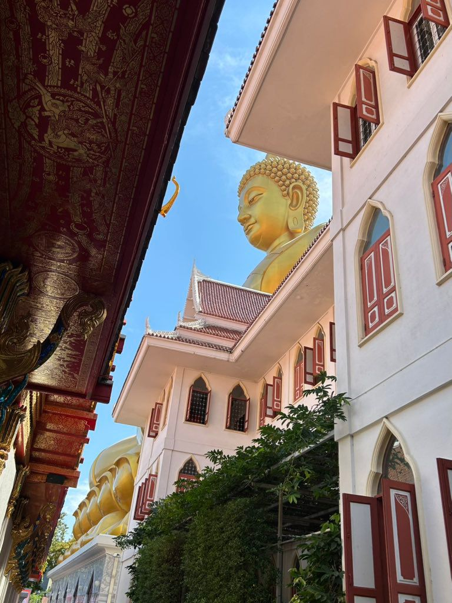Eğer fotoğrafçılıkla ilgileniyorsanız, bu devasa Buda heykeli en iyi açıyı yakalamak için adeta insanı yarışa sokacak kadar büyük ve etkileyici bir konumda. Mutlaka yolunuzu buraya düşürmenizi tavsiye ederiz.
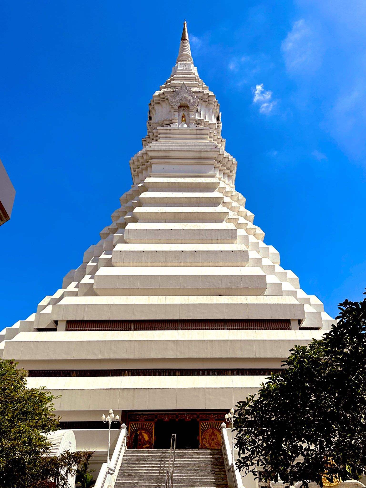
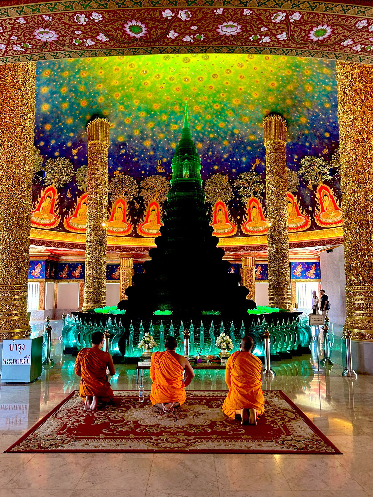
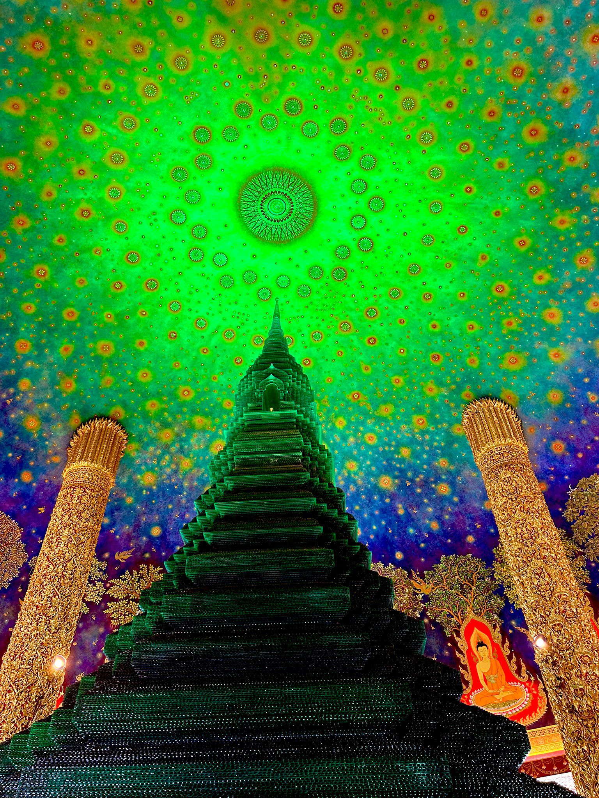
Daha sonra tapınağın arkasında yer alan beyaz pagodanın içini keşfedebilirsiniz. Pagodanın
içinde, ilk iki katta dini kalıntıların sergilendiği büyük bir müze bulunuyor. Üçüncü
katta ise daha önce Tayland'da hiç görmediğimiz, hipnotize edici desenler ve canlı renklerle
boyanmış, pagoda içinde
pagoda tarzında ilginç bir ortam var. Kesinlikle tırmanmaya ve görmeye değer!
Tapınak her gün 06:00-21:00 saatleri arasında ziyarete açık olup ve giriş
ücreti yoktur.
Damnoen Saduak Yüzen Pazarı ve Maeklong Demiryolu Turu
Damnoen Saduak Yüzen Pazar ve Maeklong Demiryolu Market kısmını
biz Bangkok’ta bir tura dahil olarak
gerçekleştirdik. Her yere genelde motorla gitsek de burası Bangkok’a yaklaşık 100 km
mesafede olduğu
için bu kez hiç kendimizi yormak istemedik. Buluşma noktamız oldukça merkezi bir caddedeydi ve sabah
saat 08.00’de oradaydık.
Yaklaşık 15 kişilik tatlı bir grubumuz ve güler yüzlü, samimi bir rehberimiz vardı. Büyük ve
rahat bir otobüsle günümüz başladı.
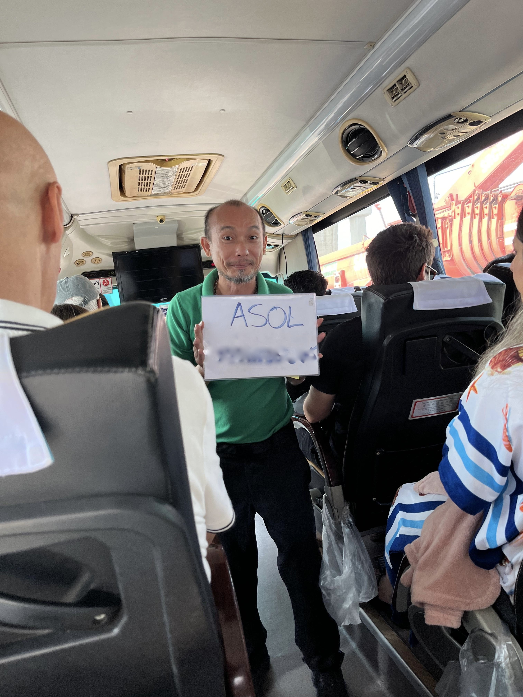
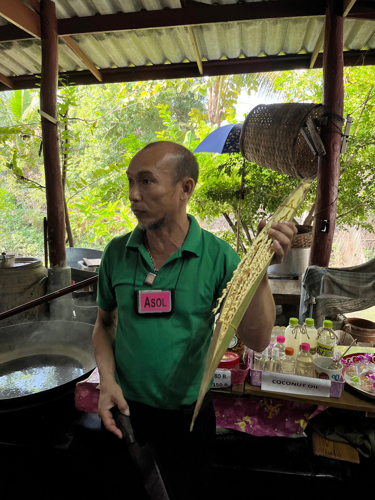
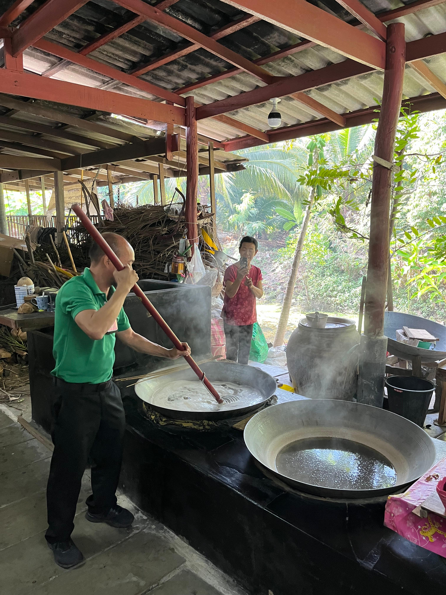
İlk durağımız Damnoen Saduak Yüzen Pazarı’ydı ama oraya varmadan önce, pazara yaklaşık 30 km kala yerel halkın neredeyse her şeyi hindistan cevizi ve bambudan ürettiği küçük bir workshop tarzı bir yerde mola verdik. Burada ürünlerin nasıl elde edildiğini, nasıl işlem gördüğünü anlattılar. Ve elde ettikleri ürünlerden minik minik tadımlar yapma imkanı da sundular.
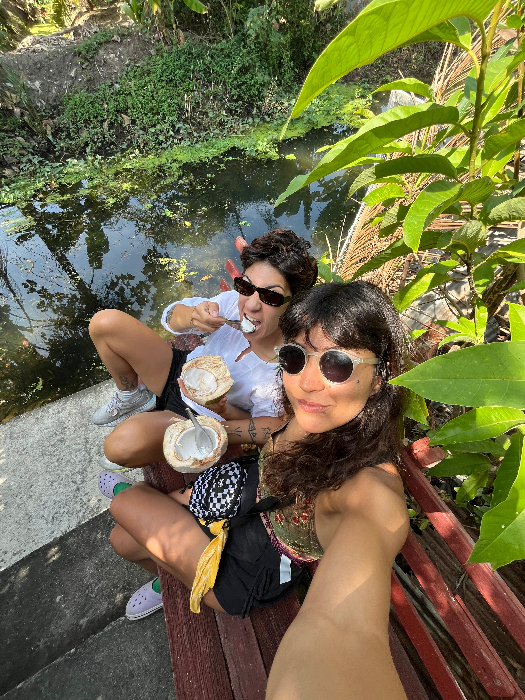Ve herkese birer hindistan cevizi suyu ikram ettiler. Diğer yerlerdeki hindistan cevizlerine hiç
benzemiyordu, gerçekten çok lezzetliydi.
İnsanlar o kadar içten ve güler yüzlüydü ki insanın içi ısınıyor. Küçük bir alışveriş alanı da
oluşturmuşlardı, fiyatlar da gayet uygundu. Biz buradan hindistan cevizi yağı, sabunu ve kabuğundan
yapılmış iki küçük kase aldık. Hepsine yaklaşık 300 Baht ödedik.
Gerçekten hem çok ucuz hem de doğal
ürünlerdi. Bizdeki gibi “tur şirketiyle gidildi, kesin pahalıdır” algısı burada hiç yoktu
anlayacağınız🙂
Daha sonra Damnoen Saduak Yüzen Market’e geçtik. Bangkok’a yaklaşık 100 km
uzaklıkta, Ratchaburi
bölgesinde yer alan burası Tayland’ın en ünlü yüzen pazarlarından biri. Alternatifleri araştırdık
ama ilk deneyim için en meşhur olanını tercih ettik.
Pazara vardığımız anda
inanılmaz bir karnaval havasıyla karşılaştık; her yer rengarenk, çok hareketli ve capcanlıydı.
Satışlar hem nehir kenarına sabitlenmiş dükkanlardan hem de kanallar üzerinde ilerleyen teknelerden yapılıyor. Meyveler, sokak lezzetleri, hediyelik eşyalar ve el işi ürünler suyun tam ortasında el değiştiriyor.
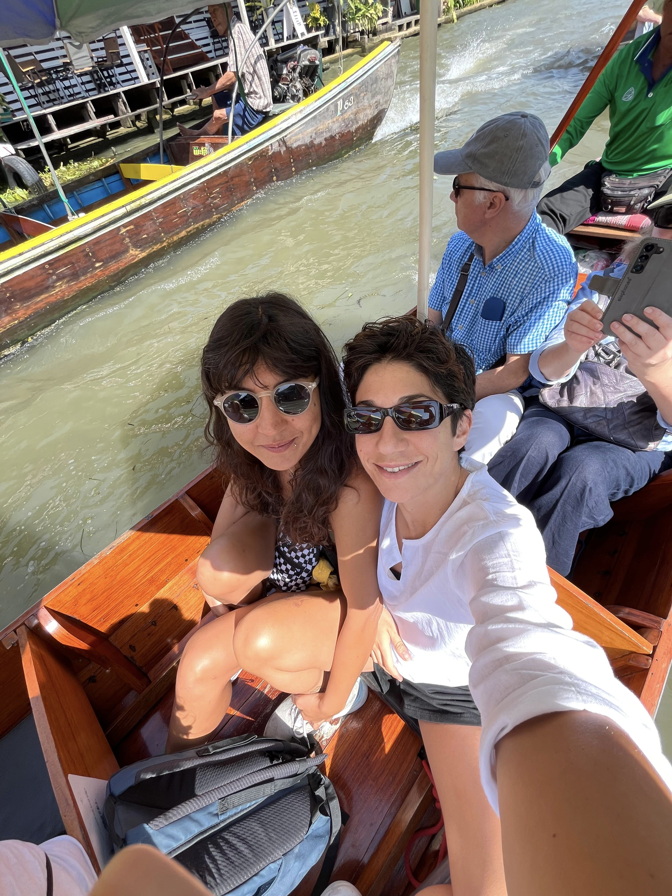Bizi göz kararı kilo–boy oranlarımıza göre 4 kişilik gruplar halinde teknelere ayırdılar ve keyifli
dakikalar
tam burada başladı. Dar kanallarda süzülen rengarenk tekneler, kalabalık ve o tatlı karmaşa
özellikle fotoğraf çekmeyi sevenler için çok etkileyici bir ortam sunuyor.
Alışverişi biraz hızlı yapmanız gerekiyor çünkü tekneler sürekli hareket halinde ve çok fazla
vaktiniz olmuyor. Elinizde mutlaka nakit bulundurmalısınız; kart kullanmaya zaten vakit olmuyor.
Eğer teknedeki
görevli biraz daha oyalanmak istediğinizi fark ederse, kısa ama çok işinize yarayan minicik bir
bekleme süresi de tanıyabiliyor.
Teknelerden indikten sonra kendinizi bir anda kocaman bir yeme-içme ve hediyelik eşya pazarının
içinde buluyorsunuz. Bizim turumuz buluşma noktasını söyleyerek bize toplam 1,5 saat
süre tanıdı.
Şunu net söyleyebiliriz ki, tekne üzerindeyken yapılan alışveriş biraz daha pahalı
oluyor. Örneğin
biz suyun üzerindeyken 3 tane anahtarlığa 100 Baht ödedik, tekneden indikten sonra gezdiğimiz büyük
pazarda aynı 3 anahtarlığı 50 Baht’a gördük🙂
Bu yüzden alışveriş konusunda acele etmemenizi kesinlikle tavsiye ederiz. Evet, turistik bir pazar
olduğu için fiyatlar yerel pazarlara göre genel olarak biraz daha yüksek; ama atmosferi ve yaşattığı
deneyimle yine de kesinlikle görülmeye değer.
Ve sıradaki istikametimiz Maeklong Railway Market, Tayland’ın en ilginç ve en sıra dışı pazarlarından biri olarak biliniyor. Samut Songkhram bölgesinde yer alan bu pazarı özel kılan şey, aktif olarak kullanılan bir tren hattının tam ortasına kurulmuş olması.
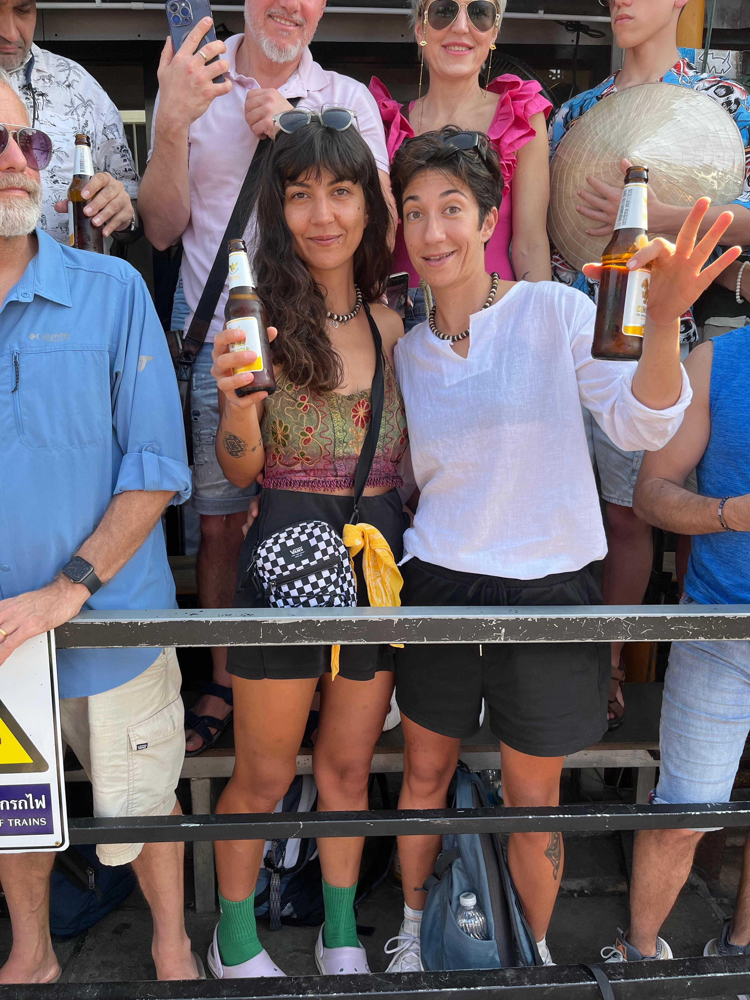
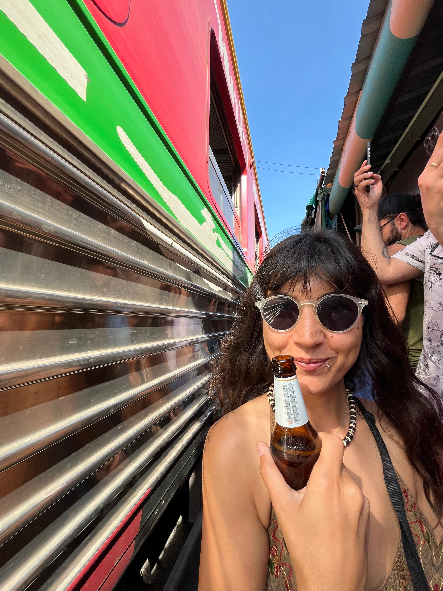
Biz de tren geçişini en önden deneyimlemek için rayların hemen kenarındaki küçük bir kafeye oturduk. Ortam adeta bir tribün gibiydi; herkes içeceklerini yudumlarken kameralarını hazırlamış, heyecanla trenin geçiş anını bekliyordu.
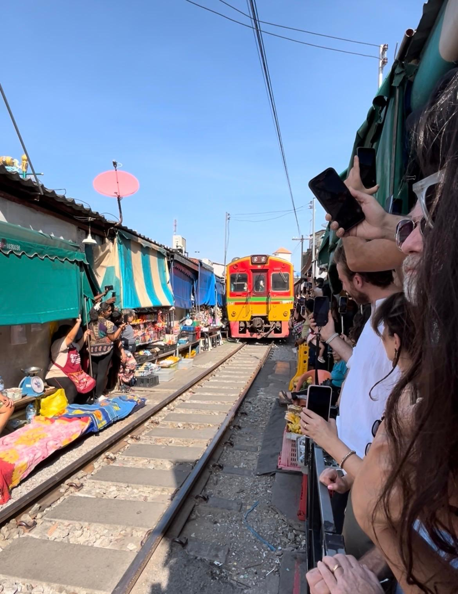Tren yaklaşırken satıcıların saniyeler içinde tezgahlarını toplaması, tenteleri kapatması ve tren geçer geçmez her şeyin tekrar eski haline dönmesi gerçekten sadece birkaç dakikayı alıyor ve izlerken insan hayran kalıyor.
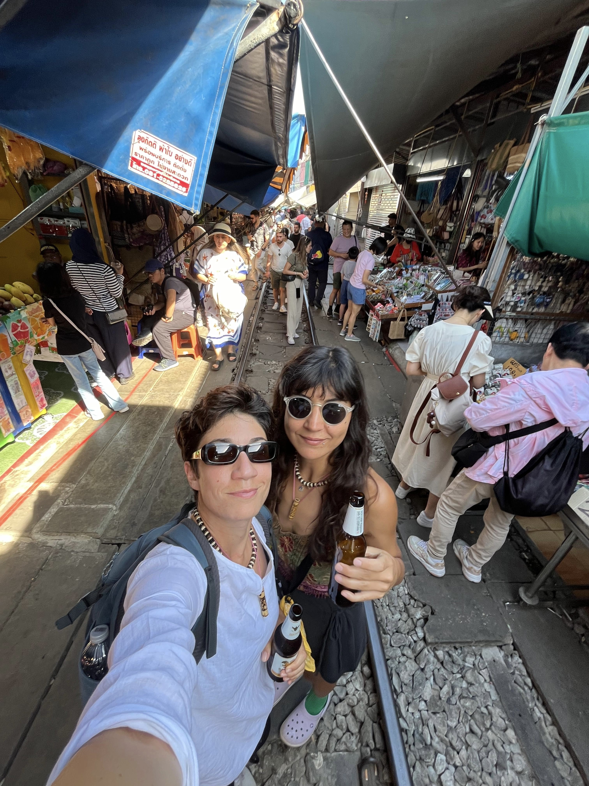Tren geçtikten sonra pazar kısa bir süre daha sakin oluyor; bu da hem rahatça gezmek, alışveriş yapmak hem de güzel fotoğraflar çekmek için harika bir fırsat yaratıyor.
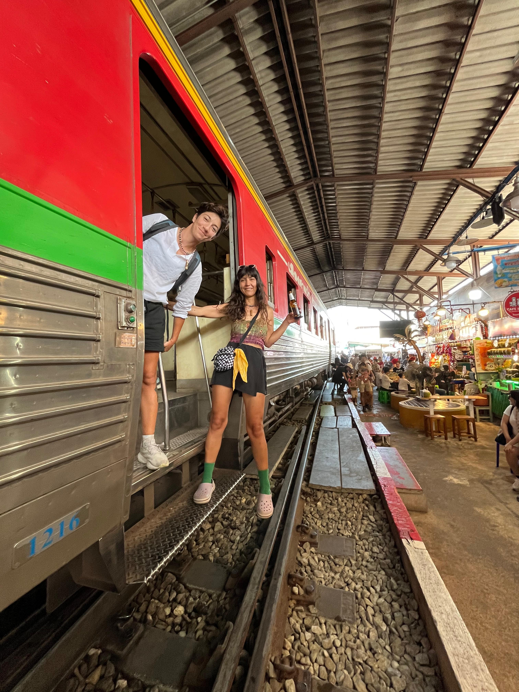Tren, pazarın sonunda bir süre bekliyor, böylece siz de girip içini rahatça gezebiliyor ve harika
kareler yakalayabiliyorsunuz.
Maeklong Demiryolu Pazarı’nda trenle yolculuk yapmak da bir seçenek; hat aktif ve
bölgedeki köylere
giden günlük seferler düzenliyor, dilerseniz bilet alıp birkaç durak giderek çevredeki köyleri ve
nehir kenarını görebilirsiniz.
Bir tura dahil olmayıp kendi imkanlarınızla gittiğinizde bunu deneyimleyebilirsiniz; ama bize göre
aslında buna hiç gerek yok. Pazarda halkın arasında olmak ve her şeyi gözlemlemek bile oldukça ilgi
çekici. Tabii kararı size bırakıyoruz🙂
Ve son olarak; buraya geldiğinizde mutlaka alışveriş yapmanızı tavsiye ederiz.
Turistik olmasına rağmen fiyatlar oldukça uygun ve yerliler pazarlığa da çok müsait.
Ve tekrar son olarak; Biz Tayland’da 2 ay kaldık ve bu süre boyunca sadece 2 tura
katıldık; birincisi Phi Phi
Adaları turu,
ikincisi ise bu tur oldu. Şunu rahatlıkla söyleyebiliriz ki, bu tur en doğru
karardı. Sabah 08:00’de
buluşma noktasından hareket ettik ve akşam 17:00 civarında tekrar Bangkok merkezdeydik. Siz de
turunuzu planlamak isterseniz buraya tıklayabilirsiniz.